静かな漁村は、かつての特攻基地 < 宿毛基地 / 高知県宿毛市 >
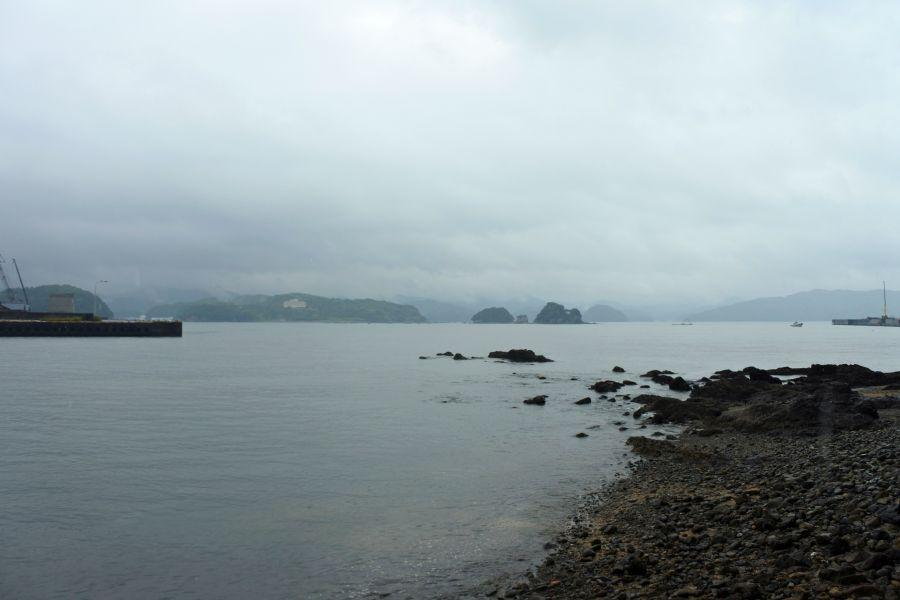
雨煙る静かな海は高知県宿毛市(すくもし)の宿毛湾。
現在は 四国で一番最後に夕日が沈む 高知県西端の静かな街ですが、第二次世界大戦においては、三方が山に囲まれ 水深が深く主要艦隊が寄港でき、なおかつ太平洋に面したこの場所は 必然的に重要視され、大日本帝国海軍の重要な基地となりました。
世界最強と謳われた戦艦大和の公使運転(テスト走行)は、ここ宿毛湾で昭和16年(1941)10月30日に行われています。
堅牢なコンクリート塀はかつての弾薬庫
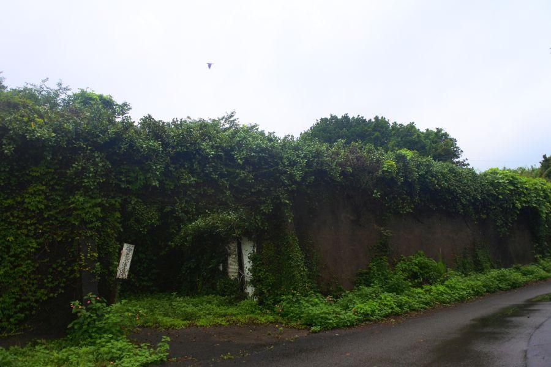
弾薬庫跡
太平洋に面した高知県は、本土防衛の要として沿岸各所に要塞が築かれました。
特に沖縄が陥落してからは 次に米軍が上陸するのは高知県と噂され、悲しくも特攻兵器が配備された歴史があります。
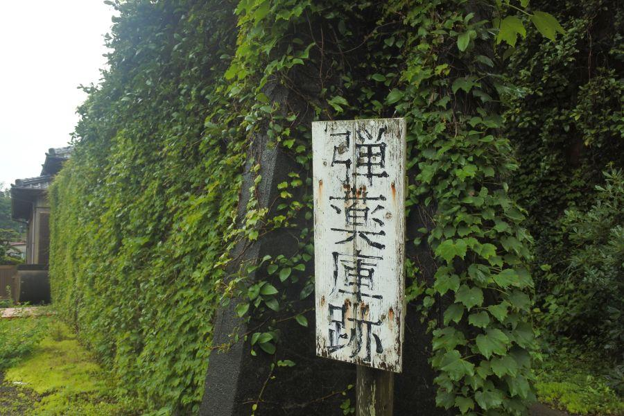
こちら宿毛市宇須々木(うすすき)地区に残るツタが生い茂る塀は、弾薬庫の跡。
分厚いコンクリート塀が、ここが何であるかをよく伝えています。
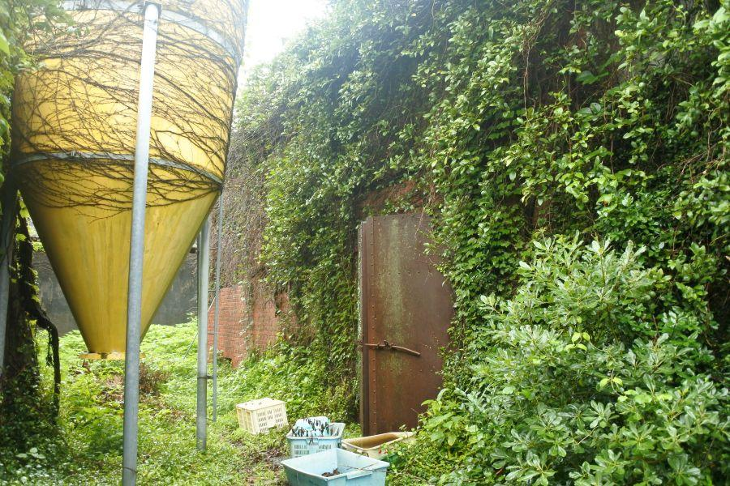
塀をくぐり 中へ入るとレンガ・コンクリート造りの建物が現れました。頑丈な鉄扉が ここが元々何であるかをよく伝えています。
飼料タンクがあるので、現在は民間に払い下げられて 何らかの家畜が飼われているのでしょうか。
動物を飼育している場所へ入るには許可&衛生準備が必要なので、ここまでにしておきます。
貯油庫と航空機格納庫
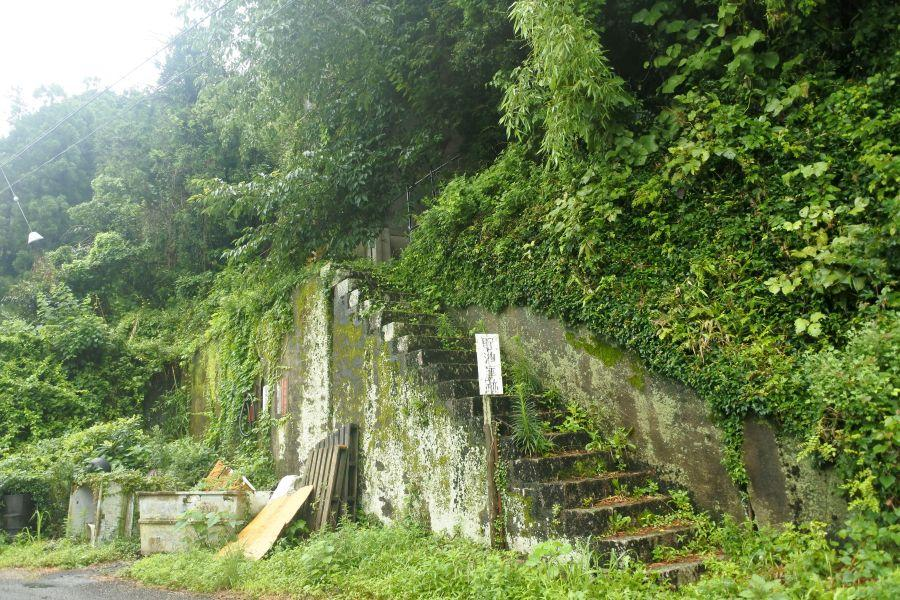
貯油庫跡
水上艇や艦艇の燃料を貯蔵していた施設で、性質上 堅牢に造られています。
こちらも現在は地元の方々が使用しているようで、新しい油の匂いがしました。漁業関係でしょうか。
なお大戦末期は 原油が不足していたので、練習機や輸送艇等の燃料は 松の根から抽出した油・松根油(しょうこんゆ)が用いられました。
そのため全国各地で松の木が多数伐採された。宿毛でも 國境の旧街道である松尾峠の松並木が切り倒され、松根油製造に充てられたと記録されています。
根は松根油に、幹は震洋艇(しんようてい、後述)など 木造のボートを作るのに利用。松の伐採や運搬は 高齢者や女性・子どもたちの勤労奉仕によって行われたそうです。
関連記事 > 2017,11/21 歩いて県境越えを実感できる古道・遍路道< 松尾峠 / 高知県宿毛市・愛媛県愛南町 >
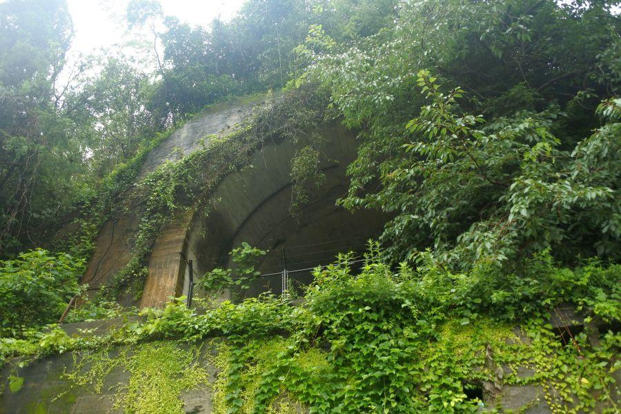
階段をつたって上部へ行ってみます。間口の広さからして 避難用の防空壕ではありません。
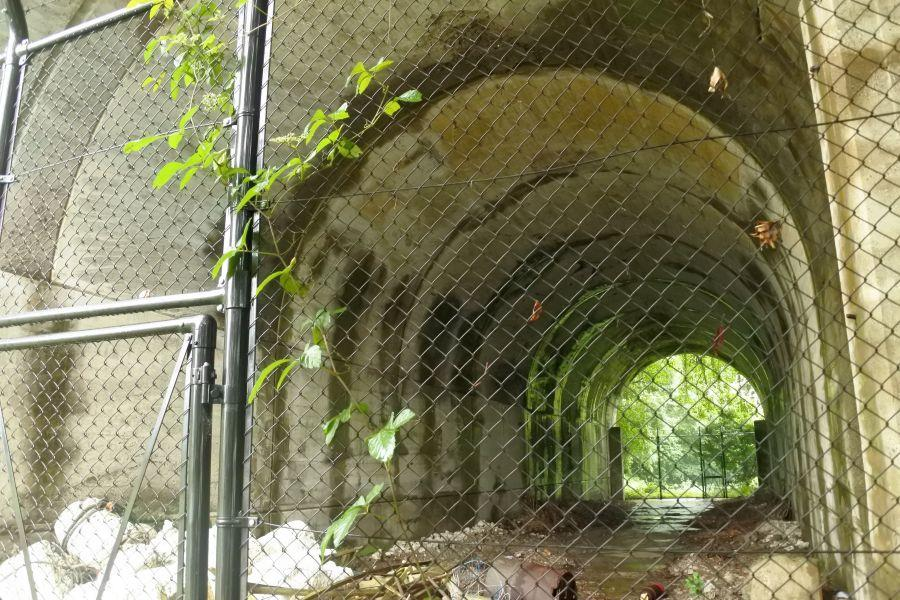
航空機格納庫
大きい...
ざっと目測するに、高さ10m・幅5m・奥行き50mくらい。小型の水上艇であれば 二機は格納できそうです。
この場所では 水上艇をクレーンで吊り上げて、整備や給油が行われていました。
特攻兵器・震洋艇
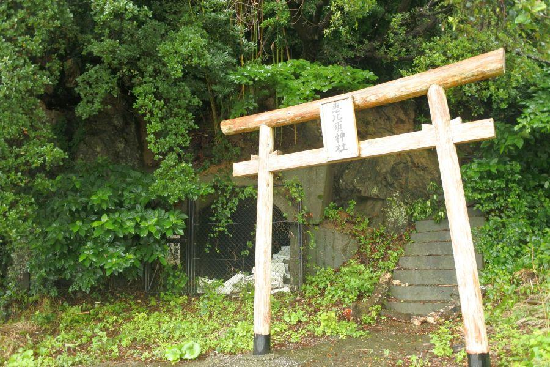
海岸に近いところ行くと、神社と人口の洞窟が口を開けています。
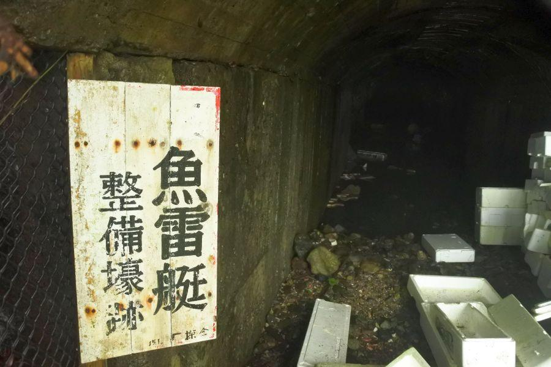
魚雷艇整備壕跡
とあります。魚雷艇とは、敵艦隊の撃沈を目的に 魚雷を主武装とした小型艇。
というのは、まだ戦局に余裕があった時代の話。
大戦末期には "震洋" と名付けられた特攻兵器の格納庫になっていました。
震洋とは、小型のモーターボートの船首に爆弾を搭載して 敵艦隊に体当たりして爆発させる特攻兵器。米軍の本土上陸が現実味を帯びてきたのに合わせて 日本の沿岸に配備されました。
特に米軍の本土上陸第一地点と目された高知県沿岸に震洋が配備された数は多く、高知飛行場近く 香南市にあった震洋艇基地では、戦後間もない頃に起こった爆発事故により、戦争を乗り越えた多数の命が失われる悲惨な事故が起こっています。
幸いにも宿毛基地から震洋の出撃は無く 戦死者はありませんでした。
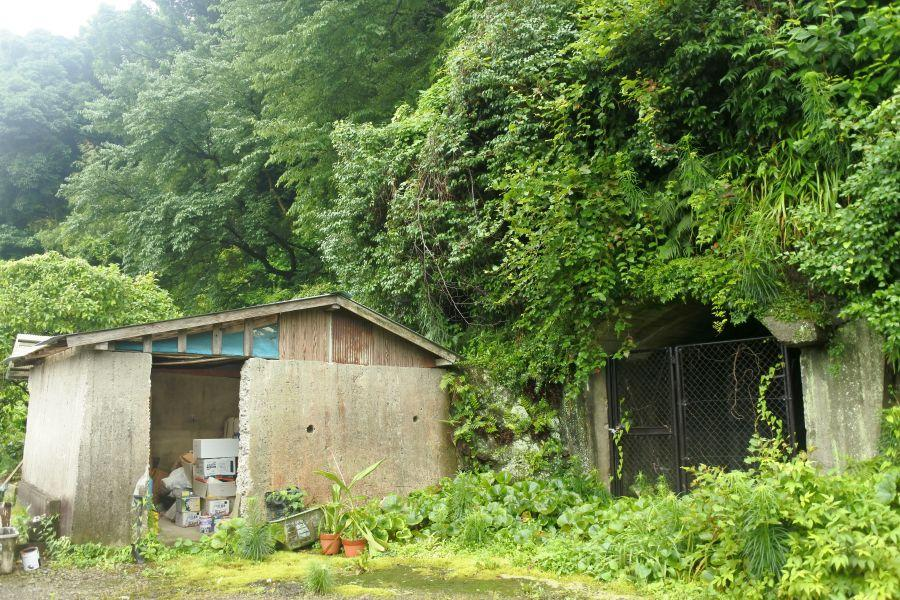
この山一帯に多数存在する、魚雷艇→震洋艇を格納する壕と、ここはその左に残されているコンクリート造りの建造物。
現在は屋根が付けられて 漁具等の倉庫に転用されているようですが...
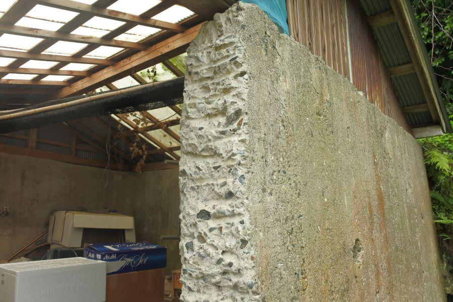
近付いてよく観察してみると、コンクリートの一部分が削られて 出入口になっていることがわかります。
改造が施される前は、防火用の水や砂を貯めておく、消火設備だったのではないでしょうか。
今 こうして断面を見ることができますが、内部に小石が多数混じっていることから、資材不足を受けて作られた急造品であることが想像できます。
宿毛基地は特攻部隊が配備されたにも関わらず、実戦を交えることなく 終戦を迎えることができました。
今 一帯の基地遺構は野に返りつつ、元々の静かな漁村へ姿を戻しています。
宿毛基地
< 自家用車 >
高松駅から 約4時間10分、264km
高知龍馬空港から 約3時間、156km
松山空港から 約2時間50分、160km
※ 主な地点からの最速・最短距離
※ 宿毛基地の地点登録が無いため、基地内にある神社としています